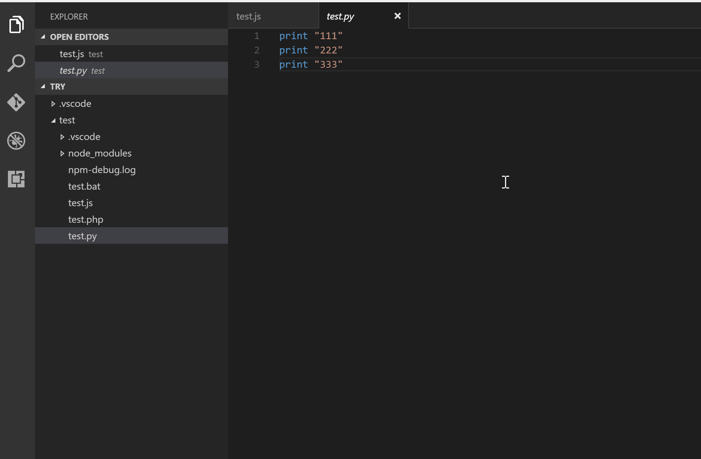
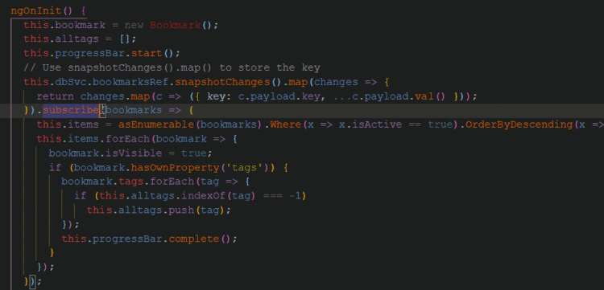
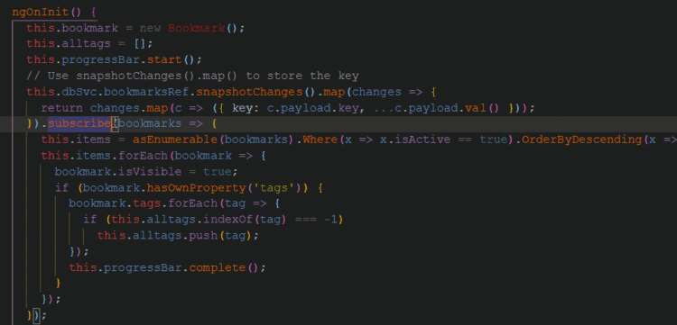
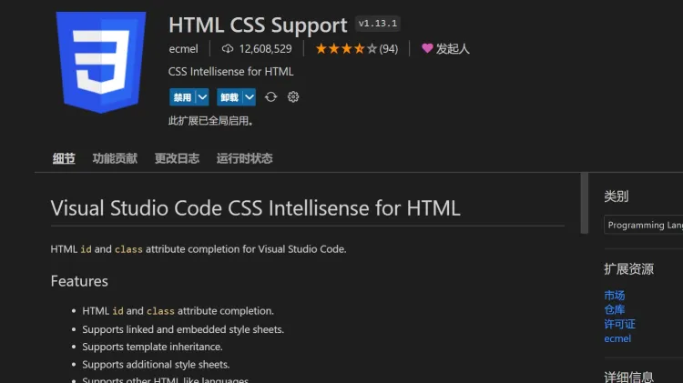
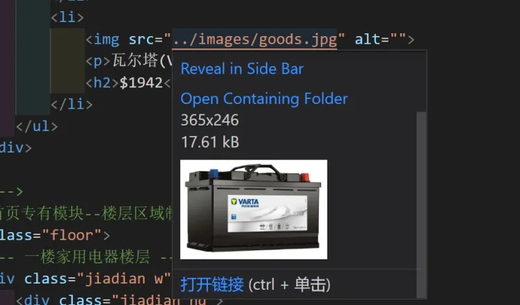

Code插件推荐（后续单独出界面）
标签: 扩展
前言
对于VS Code，随着软件的更新，越来越多原本需要扩展才能实现的功能，现如今都被添加进软件，所以使用插件前务必更新至最新版本。可点击“帮助”-“检查更新”获取最新版本，或在官网获取最新安装包。
前端插件推荐
Auto Rename Tag
该扩展修改HTML标签时，自动修改匹配的标签。

open in browser
在浏览器里预览网页必备。运行html文件

CSS Peek
定位 CSS 类名

Live Server
启动具有静态和动态页面的实时重新加载功能的开发本地服务器，前端开发利好。

扩展安装完成后打开一个html文档，右键即可找到 Open with Live Server ，或在窗口右下角点击  启动。
启动。

将VS Code与浏览器像这样并排，便可实时显示html内容。当VS Code保存 ( Ctrl+s ) 一次右侧页面便会更新。

Code Runner
有时，你不需要运行你的整个项目，只需要其中的一小段。这就是Code Runner的用武之地。这个VS Code插件支持多种语言，可以通过预定义的键盘快捷键或在鼠标的帮助下运行高亮代码。 
Bracket Pair Colorization Toggler
当你处理嵌套和逻辑条件时，情况会变得更糟。大括号对着色器通过给每个大括号对附加不同的颜色，解决了代码中大括号对猎取的问题。强烈推荐安装使用，因为实在是太好用了。
 
这意味着，如果你有多个大括号，为了我们的方便和代码效率，它很容易被配上颜色。

这意味着，如果你有多个大括号，为了我们的方便和代码效率，它很容易被配上颜色。
Prettier-Code formatter
Prettier 是最受欢迎的格式化和 linting 工具，可根据行业惯例标准化您的代码。它还确保您的团队在外观上创建视觉上无缝的代码 - 因此无需再争论您应该使用多少个制表符或空格或括号应该放在哪里。


可以配置.prettierc.js文件,配合eslint、git hooks 一起使用，提升项目代码的规范性
module.exports = {
printWidth: 100,// 一行最多 100 字符
useTabs: false,// 不使用缩进符，而使用空格
tabWidth: 4,// 使用 4 个空格缩进
tabSize: 4,
semi: true,// 行尾需要有分号
singleQuote: true,// 使用单引号
quoteProps: 'as-needed',// 对象的 key 仅在必要时用引号
jsxSingleQuote: false,// jsx 不使用单引号，而使用双引号
trailingComma: 'es5',// 末尾不需要逗号 'es5' none
bracketSpacing: true,// 大括号内的首尾需要空格
jsxBracketSameLine: false,// jsx 标签的反尖括号需要换行
arrowParens: 'always',// 箭头函数，只有一个参数的时候，也需要括号
rangeStart: 0,// 每个文件格式化的范围是文件的全部内容
rangeEnd: Infinity,//不设置格式化的结束行，即对应文件内的所有内容
requirePragma: false,// 不需要写文件开头的 @prettier
insertPragma: false,// 不需要自动在文件开头插入 @prettier
proseWrap: 'preserve',// 使用默认的折行标准
htmlWhitespaceSensitivity: 'css',// 根据显示样式决定 html 要不要折行
endOfLine: 'lf',// 换行符使用 lf 结尾是 \n \r \n\r auto
};
Better Comments
Better Comments 允许您根据不同类型的注释突出显示您的注释，从而将其提升到一个新的水平,支持的类型是警报、查询、TODO 和突出显示。它也可以通过您可能需要的其他内容的注释样式进行扩展

ESLint
ESLint是一个JavaScript代码inter，可以发现并修复你的JavaScript代码中的问题。它可以很好地检测出你的代码中可能存在的问题模式，并帮助你修复它们，以避免不一致和避免bug。


HTML CSS Support
HTML CSS Support 是在VS Code中对HTML和CSS的终极智能感应。其功能包括id和class属性的完成，链接和嵌入样式表，继承和CSS选择器的验证。


Image preview
预览图片,图片是否正确引入的显示工具，在图片连接上按住ctrl，鼠标悬浮即可看见是否正确找到路径下的图片文件 
Emmet
具体可以到这个网址去看。
其它的某些(可能)好用的插件推荐(不定期更新)
Codelf（是小写的L不是大写的i）
一个变量命名建议器，是一个学长推荐的。
虽然自己在编写程序、建立代码块的时候各人有各人的命名习惯，但在此基础上，运用什么样的翻译和字母组合来表达出你想要体现的变量或函数是个学问。它则可以在这个方面上帮到你。
形式是一个网页。
用法：选中相应文本->鼠标右击->Codelf

（我这边不知为何用这个插件没有反应，按理来说它应该会转到一个相应网址的，有点尴尬。。）
← 回到主页